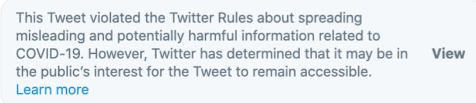

Because of a rise in misinformation about Covid-19, Twitter instated a policy stating that tweets from any user can be removed if it meets the following critreria (help.twitter.com):
- advance a claim of fact, expressed in definitive terms
- be demonstrably false or misleading, based on widely available, unathouratative sources
- be likely to impace public safety or cause serious harm

In Novermber of 2021 the automotive journalism world was sent into a frenzy when a small automotive twitter account announced with no sources reported that Mclaren had been bought by Audi. The rumor spread swiftly, warranting the above response from Mclaren within 24 hours.